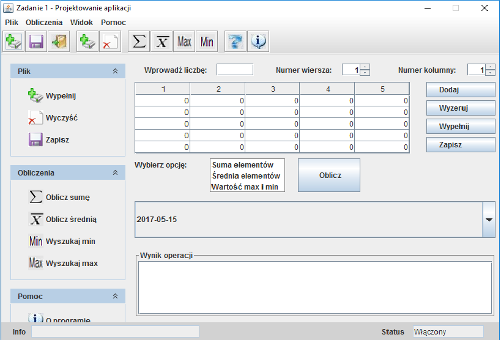

Spis tresci
Wprowadzenie
Prosty program oparty o interfejs GUI dokonujacy podstawowe operacje: suma, srednia oraz man i max, a ponadto dane wprowadzane sa przez uzytownika

Specyfikacja
Program zostal napisany w operaciu o interfejs graficzny - swing oraz awt. Sklada sie z 3 klas:
- MainApplication - glowna
- HelpContent - okno pomocy
- AboutWindow - okno z informacja o programie
Funkcje
- wprowadzanie wartosci do tablicy
- wypelnianie tablicy losowymi liczbami
- zerowanie zawartosci tablicy
- obliczanie sumy wartosci
- obliczanie sredniej wartosci
- obliczanie wartosci max i min z tabeli
- zapis zawartosci tabeli do pliku tekstowego
- obsluga skrotami klawiszowymi
Podsumowanie
Wszelkie wymienione wyzej informacje oraz funkcje, zostaly zaimplementowane w 100%. Poprawnosc dzialania zostala sprawdzona a program napisany
w sposob przyjazny dla uzytkownika.